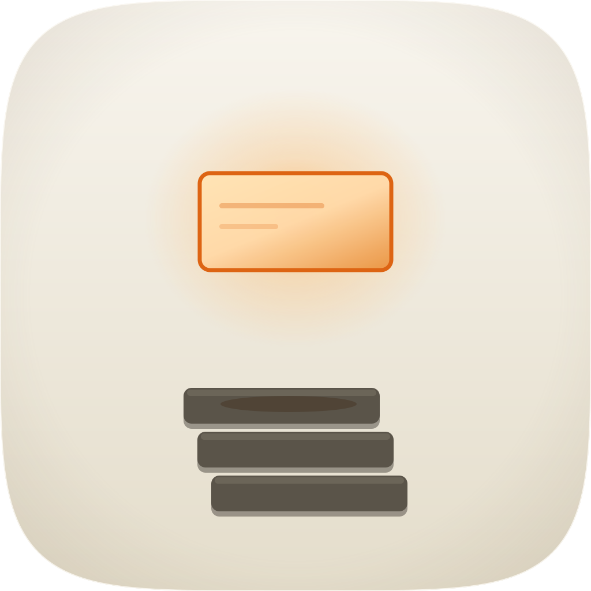
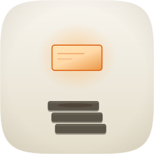

build_icon.py, which is the only commission record here — there is no
icon-notes.md. Nor is there any Engine B or Engine C artifact, nor a
fidelity-runs/, nor any judge record: no fidelity loop ran, no blind panel saw this
icon, and there is exactly one take against a floor of three. The score was assigned on 19 Aug
by reading the twelve-point rubric in icon-directions.md against the renders in
audit-renders/ — a retrospective judgment, not the original verdict, because there was
none. audit_sheet.py check still fails here on the take floor and on the structure gate;
both are true statements about the commission rather than defects in this page, and no row has been
invented to clear the count. This sheet covers the icon only; the banner in this directory has its own
audit and its own verdict and is not in scope here.| Take | Hero at 1024, then renders at 128 / 64 / 48 / 32 / 16 css px (2× retina sources), plus the 16px squint magnified | Rubric | Verdict |
|---|---|---|---|
| A · icon.svgEngine A, hand-authored layered SVG — the only take, and it ships |   |
11 / 12fails 10 | A short column of three filed cards low in the tile, fanned 24px per row, with one card lifted clear above it and lit from behind so that card alone is translucent and saturated. The column is the board — orderly, uniform, unexamined. The lifted card is the act of checking. Same width, same corner radius, same silhouette; one has been put under a light and the others have not, and it is the only warm thing on the tile because it is the only thing that has been looked at. Clears all four non-negotiables on real renders and drops only #10, which is measured. The gap between the two elements is deliberate — a card resting flush reads as the top of the stack, a card with air under it reads as having been taken out — and it is also the source of the one composition note below. |
| Check | Result |
|---|---|
| 1. Mask discipline — designed for the squircle, no baked corners or shadow (non-negotiable) | PASS — full-bleed 1024 with the family superellipse read from create-mac-icon/assets/squircle-path.txt and applied as a clipPath. No baked corner radius and no baked drop shadow; the one tile-level treatment is a 3px #FFFDF8 rim stroke at 0.8 opacity drawn on the squircle itself, which is a rim light on the family path rather than a substitute for it. |
| 2. Grid adherence — optically centred, safe-zone margins (non-negotiable) | PASS with a note, and it is the note a revision should read first. The solid focal group — three 340px cards fanned 24px, spanning x=318 to x=706 — is 37.9% of tile width, well under the 55–65% composition constant, and the group runs y=300 to y=886, or 57.2% of height. Counting the halo (an ellipse rx=262 centred at x=512, so x=250 to x=774) the visual mass reaches 51.2% of width, which is why this is a note rather than a deduction: the glow is real mass and the vertical span is inside the band. The offset is deliberate — the 204px void between the lifted card and the column is the subject — but it does leave the object reading small in a large field, and the marketplace has failed sibling takes on grid adherence at 29% and 37% before now. |
| 3. Silhouette test — nameable filled solid black (non-negotiable) | PASS — filled to one tone it is three stacked bars with a single rounded plane floating clear above them. Nameable as a card lifted off a stack. The halo contributes nothing to the silhouette, so the geometry is carrying this on its own, which is the right way round. |
| 4. 16px squint — survives menu-bar and Spotlight (non-negotiable) | PASS, and the cleanest of the set. Verified on master-32.png at true 16px and again at ×6: a warm glowing plane above a dark fanned cluster, two elements, unambiguous. The translucency and the two rules on the lifted card dissolve; the relationship that carries the meaning does not. |
| 5. Single light model | PASS — one light, behind and above the lifted card. The column's top arrises catch it as #6E675A caps while their faces fall to #5A5449, and the cast shadow is warm #3E2A18 rather than blue, which is the tell the commission explicitly avoided. |
| 6. Palette economy — ≤2 hue families, accent reserved for the focal | PASS — porcelain ground, one dark neutral for the filed cards, and one warm family for the light: #FFD9A8 core through #DD6413 edge to the #FFB661 halo are values of a single amber-vermilion ramp, spent entirely on the lifted card. |
| 7. Figure-ground — glyph vs ground ≥3:1, survives grayscale | PASS — the widest value gap of the icons audited on 19 Aug. The card face #5A5449 reads 5.54:1 against the ground and survives grayscale outright. The lifted card's own core is only 1.23:1 against the ground, but it is held by a 7px #DD6413 edge stroke at 3.27:1, so it separates by outline where it cannot separate by fill — a deliberate structure rather than an accident. |
| 8. Depth coherence — planes ordered, shadows match light | PASS — halo behind everything, then the column, then the cast shadow, then the lifted card in front. The ellipse lands on the face of the top card rather than behind it, which is what makes the air under the lifted card visible instead of implied. Each fanned card carries its own 40%-opacity underside. |
| 9. Era coherence | PASS — cushioned porcelain tile with a 20% vignette, one soft light, no hard specular. The accent glows rather than reflects, which is also how it separates from whats-left, its nearest neighbour: that one is an extruded warm keystone with a hole through it, this is flat planes seen near-on. |
| 10. Variant robustness — survives Default/Dark/Clear/Tinted, identity not hostage to one background (76% of the corpus fails here) | FAIL — on the variant read alone, and the structural half of this row is now closed. The sheet first recorded 0 named <g id> layers in icon.svg, everything sitting inside one unnamed <g clip-path>. Fixed in build_icon.py on 19 Aug; fidelity.py structure now reports 5 named layers (art / bg / mid / fg / highlight) and passes, and because the wrappers carry no presentation attributes all five shipped sizes re-render byte-identical: rms 0.000000, no changed bounding box, at 1024, 256, 128, 64 and 16. What still drops the point: the identity rests on a warm glow reading against a light ground, and under Dark the glow gains contrast while the porcelain cushion it is glowing on stops being porcelain. The named layers make that separable now; nothing has separated it yet, and no variant was captured. |
| 11. Personality — ≥1 nameable device beyond glyph-on-gradient | PASS — a translucent backlit card held above an opaque filed column, identical in width and radius to the cards it came from. Nothing else in this marketplace has a backlit plane above an opaque stack. |
| 12. No-text | PASS — the two marks on the lifted card are abstract rules at 34% and 22% opacity. No glyphs, no words, no screenshot. |
icon.svg → icon.png /
icon-256.png / icon-128.png / icon-64.png /
icon-16.png), 11 / 12. It clears all four non-negotiable checks on real renders,
it has the best 16px read of the icons audited on this date, its material and its light model are
authored in the file rather than photographed into it, and its device is unique in the set. One point
down. Known liabilities to revisit, in the order a revision should take them:
(1) The layer plan is missing (#10). A defect in the master, not in this sheet: the
strata need authoring as named <g id="bg|mid|fg|highlight"> groups in
build_icon.py, and until they are, audit_sheet.py check fails here on the
structure gate. Deliberately not fixed on this pass, because it changes the shipped artwork.
(2) Focal width at 37.9% solid, 51.2% with the halo (#2). The void that carries the
subject is also what keeps the object small in the tile, so this is a genuine trade rather than a
mistake — but it is a trade, and scaling the group up while keeping the gap proportional is the obvious
first experiment. Judged here as a note rather than a deduction; a second reader could reasonably score
#2 as a failure, and the measurements are given above so they can.
(3) One take, not three. Engines B and C never ran, so nothing on this page is a
comparison, and the shortfall is stated at the top rather than buried here.
(4) Variants unrendered — Dark, Clear and Tinted were never captured, so the #10
verdict rests on the structural measurement plus the value scheme rather than on screenshots.
(5) The lifted card's fill is 1.23:1 against the ground and depends entirely on its
7px edge stroke. That stroke thins with the icon, so at 16px the card is a warm patch rather than a
lit plane — acceptable, and the reason the halo is doing as much work as it is.create-mac-icon/references/icon-directions.md (mask discipline, grid, silhouette, 16px
squint, single light model, palette economy, figure-ground, depth coherence, era coherence, variant
robustness, personality, no-text) — checks 1–4 non-negotiable, delivery bar ≥10/12. Contrast ratios are
WCAG relative-luminance, computed from the named colour constants in build_icon.py;
geometry percentages are computed from the same constants against the 1024px canvas. Renders produced by
python3 ../../create-mac-icon/skills/create-mac-icon/scripts/audit_sheet.py render . --take
master=icon.svg:svg at 1024 / 256 / 128 / 96 / 64 / 32 via rsvg-convert, and every
image on this page is proved to resolve by the same script's check subcommand.